The map
What each mark on the map means.
The map only shows inside the sanctum. F1 shows and hides it; Ctrl+Shift+F1 restarts it if it looks wrong.
A label with the difficulty (Normal, Hard, Nightmare or Chaos) sits under the game minimap in full screen, and at the top left in the window.
Overview
The whole sanctum at a glance
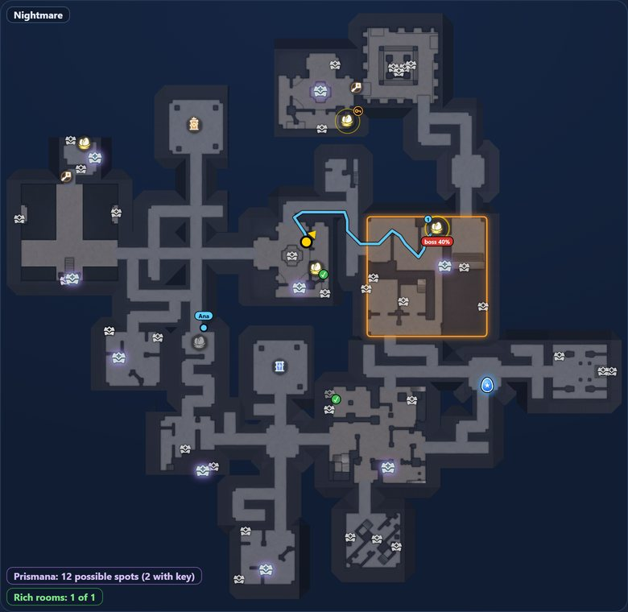
12345678910- You. The yellow arrow shows where you are and which way you look.
- Gold nest. Not checked yet. The ring shows the chance that a nest is there.
- Nest in a key room. Ring with a key: the chance if you open the door.
- Nest with a green ✓. Already searched.
- Gray nest. You were there and nothing showed up: the app infers it is empty.
- Egg on the floor. Blue egg with a star, yours or a friend’s.
- Route. Blue line through the nests left. The 1 is next.
- Glowing chest. May still drop the Prismana item.
- Rich room. Orange outline: the room with the best reward.
- Friend. Blue dot with the name of a friend.
Nests
What each nest tells you
Every possible nest spot shows up, on any difficulty, and the map updates them as you play.
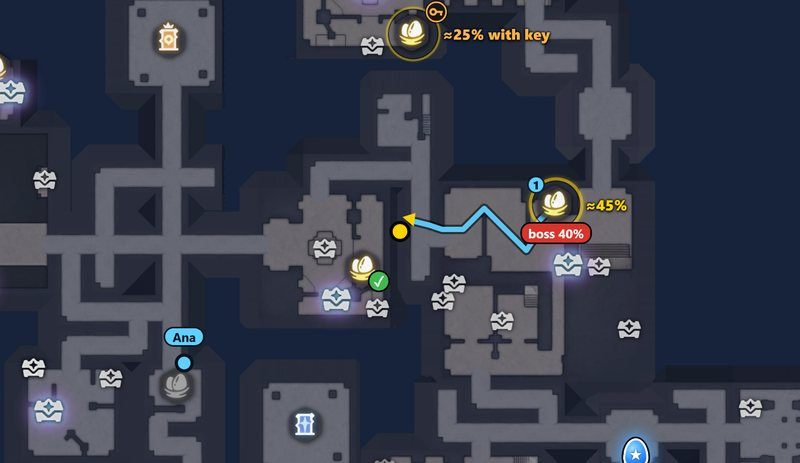
12345- Gold, with a ring. The ring is the chance a nest is there this match. Full screen shows “≈45%” once it passes 40%. It is an estimate, hence the “≈”.
- “boss 40%”. The chance the boss is in that room.
- “≈25% with key”. The chance the nest exists if you open the door. It helps you decide if the key is worth spending.
- ✓ green. Already searched. The app sees the ✓ on the game minimap, your friend’s too.
- Gray. You stayed 3 seconds within about 6 meters and left the room. No egg or ✓ showed up in 30 seconds, so the app infers the spot is empty. Just walking past changes nothing.
Only one spot is left. It is elimination, not certainty, so the ring is bright yellow, not green.
Egg and route
Where to go first?

Route
Blue line through the nests you have not checked. The numbers 1, 2, 3 give the order.
- Key-room nests stay off the route.
- With the horde coming, a green line leads to the nearest exit.
Egg on the floor
Blue egg with a star, blinking. The app sees it on the game minimap and marks where you dropped yours.
It stays marked until someone picks it up, and there can be several. An egg a friend drops shows on your map.
Alerts
Alerts at the top of the screen
They appear on their own, at the right time.
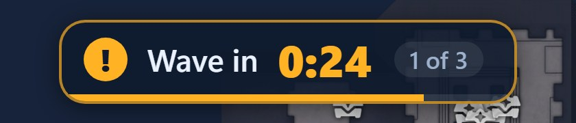
Wave in 0:24
Countdown to the next monster wave. There are three, and the card says which: “1 of 3”.
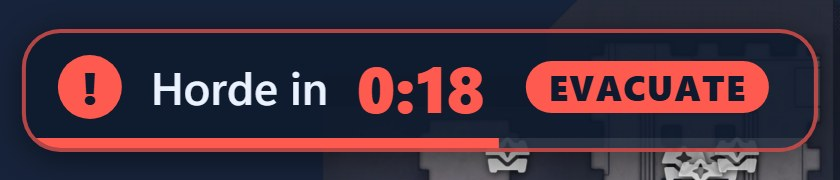
Horde in 0:18
The third wave is the horde. The “EVACUATE” badge says: head for the exit.
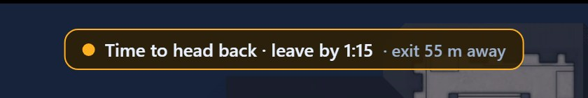
Time to head back
The clock is close to the time needed to walk to the nearest exit. The math assumes a slow pace, so runners get the alert early.
Wave and horde alerts do not vanish with the map: they appear alone at the top center. On Normal and Hard the time shows with “≈” and a dashed border, because it has not been checked in a match yet.
Chests
Which chests matter
Only rare chests count: they are the ones that can drop the Prismana item.
- GlowA rare chest that may still drop Prismana this match. Each rare chest opened, yours or a friend’s, clears the glow from the ones that no longer can.
- Opened chestIt turns gray with a ✓: green if you opened it, white if a friend did.
- Counters in the cornerIn a Chaos match: “Prismana: 36 possible spots (7 with key)” and “Rich rooms: 0 of 2”. A closed chest does not show on the minimap, so walking through the room teaches the app nothing.
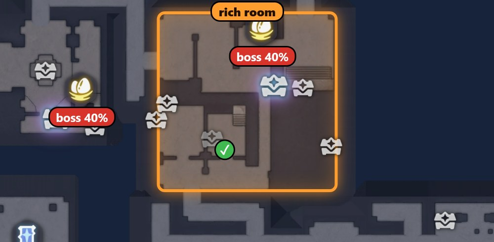
Rich room
Orange outline: the room with the best reward of the match, 1 on Pesadelo and 2 on Caos. The app only learns which one it is when a rare chest in it is opened.
Choose which chests showParty
Friends on the map

Only your party
- Blue dot with the name. The second friend shows in lilac.
- Gray means more than 15 seconds without a position: the dot stays where they were and a notice says who dropped.
- A friend off screen becomes an arrow on the edge.
- A nest checked up close and an egg dropped by one of you show on the other’s map.
Floors
Upper floor
Balconies and walkways. When you climb the stairs, the upper-floor walkways show stronger over the map. Going down returns them to normal on their own.
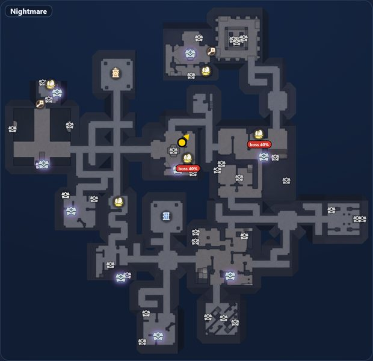
Before climbing
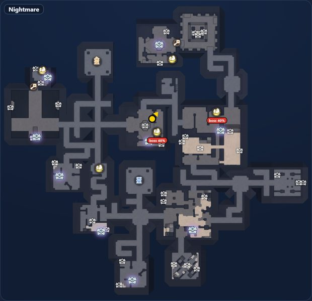
After climbing
No position
What does “Looking for you” mean?
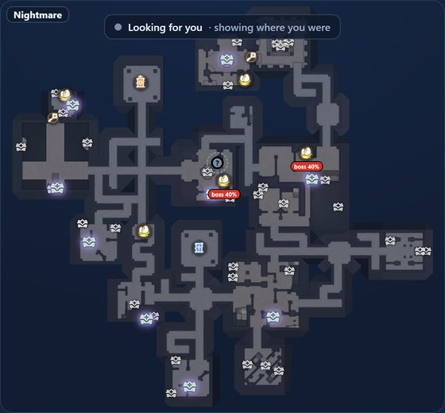
The app lost you inside the sanctum. Your arrow becomes a gray dot with a “?” at the last known spot, and the notice appears at the top.
It is usually normal when you open the game map, a menu, or while loading. If the map looks cut off or frozen, use Restart map (Ctrl+Shift+F1): the match’s nests, eggs and chests stay marked.
Opened the bag, a chest or a menu, or left the sanctum? The map hides and returns by itself. F1 hides everything.
Rotation
Rotating with you or fixed map?
You choose in the app window, under “How the map moves”. It applies to full screen and to the small window.
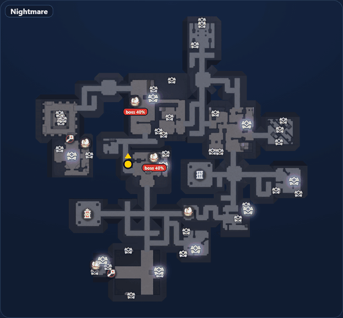
Rotates with you
Whatever you face points up.
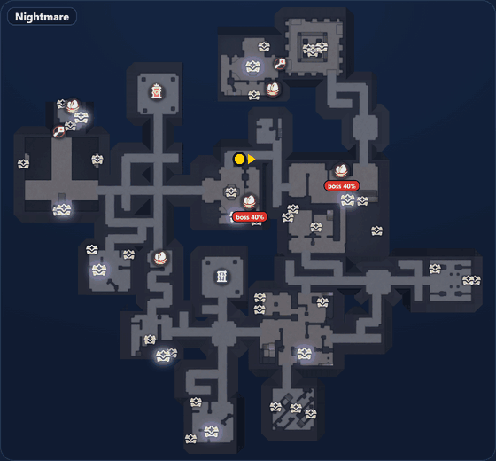
Fixed map
North stays up, and the arrow turns to where you look.